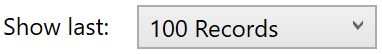
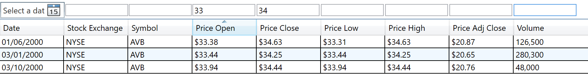
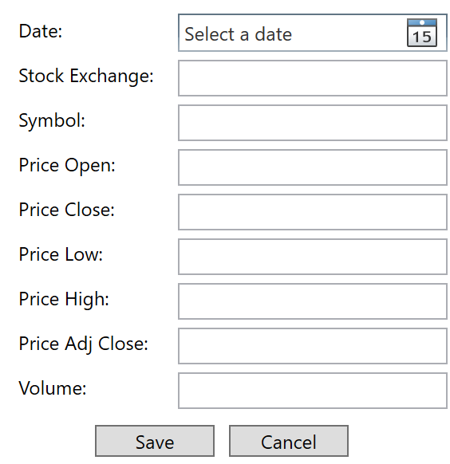
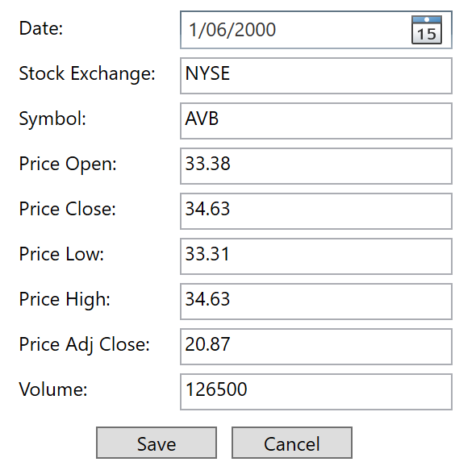
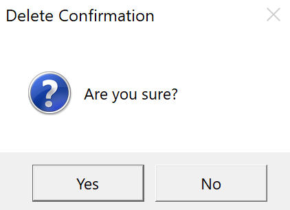
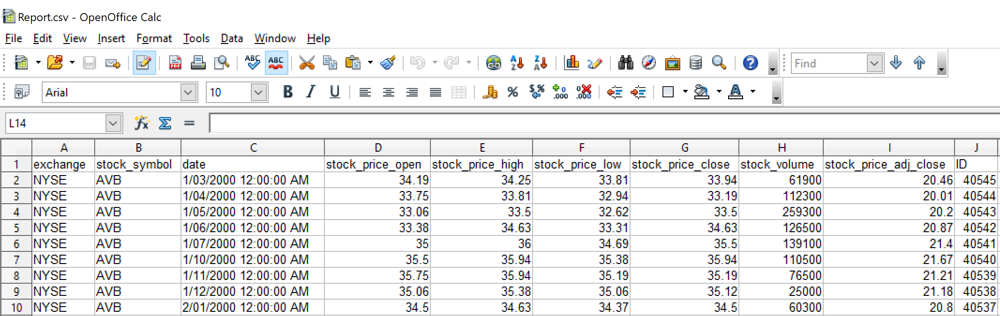
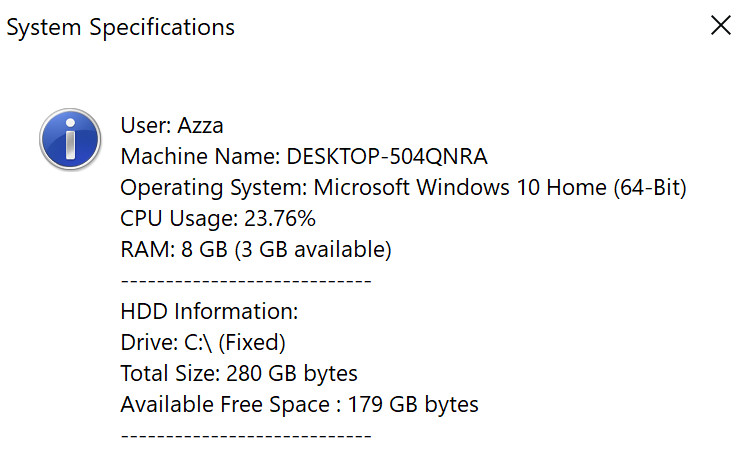

Money-B-Mine User Help
Loading Data
The data records are stored on an external database. When the application loads, it will attempt to load the records from that database. The records are loaded with the latest entries showing at the top of the list and 100 entries being loaded initially.
This can be changed by changing the “Show last” drop down at the bottom of the main window.

Should the remote data be unavailable or unable to load, a local version will be loaded for viewing (editing is only available when the database is accessible and the user is an analyst). The local version is updated to the latest version when the remote database becomes available.
Filtering Data
Filtering can be done in a number of ways, and is available for both analysts and general users.
Records can be ordered by clicking on the corresponding heading of the column you wish to sort by, and records can be filtered specifically by entering the values which you wish to filter by into the text box above the heading

Adding Records
This option is only available to analysts and can be accessed by clicking the “Add” button shown at the bottom of the main analyst window.
All fields must be entered along with correct value types in order for the record to be added to the main database.
It should also be reiterated that even if a user is logged in as an analyst that this feature will be unavailable if the main remote database is unavailable and the local cached version of the data is being displayed.

Updating Records
This option is only available to analysts and can be accessed by clicking the “Edit” button shown at the bottom of the main analyst window.
All fields must be entered along with correct value types in order for the record to be added to the main database.
It should also be reiterated that even if a user is logged in as an analyst that this feature will be unavailable if the main remote database is unavailable and the local cached version of the data is being displayed.

Deleting Records
This option is only available to analysts and can be accessed by clicking the “Delete” button shown at the bottom of the main analyst window with a selected records.
You must confirm the deletion before the record will be removed from the database. This process is irreversible and records cannot be recovered once deleted.

It should also be reiterated that even if a user is logged in as an analyst that this feature will be unavailable if the main remote database is unavailable and the local cached version of the data is being displayed.
Exporting Data
Users can export data in a .CSV format for further reporting or manipulation purposes by simply clicking the “Export CSV” from the bottom right of the main window.
It will then ask the user where they wish to save the reported file, and only the current loaded records will be exported.

Viewing Server Specifications
This option is only available to analysts, but to view the specifications of the current system where the application is currently running, select the “Show System Specs” button from the bottom of the main window.
The information displayed will be as follows:
User & Machine Name
Operating System
CPU Usage
RAM
HDD Information
